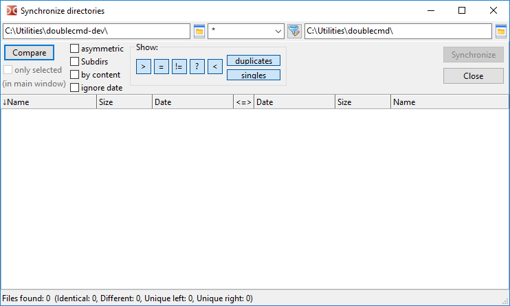
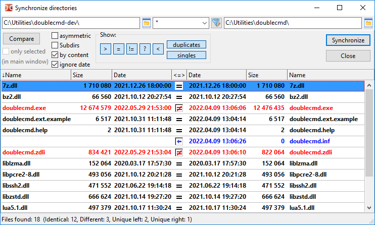
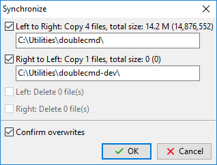

Das Werkzeug zur Verzeichnissynchronisation durchsucht die Verzeichnisse des linken und des rechten Dateipanels, zeigt Unterschiede in ihrem Inhalt an und ermöglicht es, sie anzugleichen.
Wir können zwei lokale Verzeichnisse oder ein lokales Verzeichnis und ein Verzeichnis in einem virtuellen Dateisystem synchronisieren (ein geöffnetes Archiv oder ein Verzeichnis in einem Dateisystem-Plugin).
Standardmäßig vergleicht das Synchronisationswerkzeug Dateien nach Name, Größe und Änderungsdatum.
Die Methode zum Löschen von Dateien (in den Papierkorb oder endgültig) hängt vom Zustand der Option In den Papierkorb löschen (die Shift-Taste kehrt diese Einstellung um) ab.
Hinweis: Leere Verzeichnisse werden ignoriert.

Oben im Fenster befinden sich Felder mit den aktuellen Verzeichnissen des linken und des rechten Dateipanels. Wir können sie manuell oder über die Schaltfläche zum Auswählen eines Verzeichnisses ändern.
Dazwischen liegt ein Feld zum Filtern von Dateien nach Maske (das Zeichen „*“ steht für eine beliebige Anzahl von Zeichen, das Zeichen „?“ für genau ein Zeichen). Dateien, die nicht zur Maske passen, werden ignoriert. Wir können hier mehrere Dateitypen angeben, getrennt durch ein Semikolon „;“ ohne Leerzeichen. Außerdem können wir Suchvorlagen verwenden (), einschließlich der Suche mit Inhalts-Plugins. Der Standardwert ist „*“ (alle Dateien).
Die Schaltfläche mit einem Pfeil öffnet die Liste der verwendeten Dateimasken (zu beachten ist, dass Double Commander einen gemeinsamen Verlauf der Dateimasken für mehrere Werkzeuge speichert: Dateien suchen, Verzeichnissynchronisation, Entpacken von Archiven, Befehle zum Auswählen einer Dateigruppe). Standardmäßig speichert Double Commander (unabhängig vom Zustand der Option Verlauf der Dateimasken) die zuletzt verwendete Dateimaske als Standardmaske für den nächsten Start des Synchronisationswerkzeugs (wenn es keine Suchvorlage ist), siehe Zusätzliche Einstellungen.
Um Verzeichnisse und symbolische Verknüpfungen auf Verzeichnisse auszuschließen, können wir die Suchvorlage und das Feld Unterverzeichnisse ausschließen verwenden.
Vergleichen – startet den Vergleich der gewählten Verzeichnisse. Bei Bedarf kann der Vorgang mit der Taste Esc abgebrochen werden.
Parameter:
nur ausgewählte (im Hauptfenster) – Wenn aktiviert, werden nur Dateien und Verzeichnisse verglichen, die im Dateipanel ausgewählt wurden. Es genügt, Dateien und Verzeichnisse nur in einem Dateipanel auszuwählen.
asymmetrisch – Diese Option dient zum Erstellen einer Sicherung: Eine Kopie des Inhalts des linken Panels soll im rechten Panel erzeugt werden. Dateien, die links nicht vorhanden sind, werden rechts zum Löschen markiert. Nicht verfügbar, wenn im Verzeichnis rechts kein Löschen möglich ist (zum Beispiel, weil es ein Archiv ist und das Format keine Änderung unterstützt, oder weil es eine CD/DVD ist).
Unterverzeichnisse – ermöglicht die rekursive Dateisuche: Double Commander prüft den Inhalt aller Unterverzeichnisse.
nach Inhalt – Wenn aktiviert, werden Dateien mit gleicher Größe und gleichem Datum nach Inhalt verglichen (ein byteweiser Vergleich). Nicht verfügbar, wenn sich das zweite Verzeichnis in einem virtuellen Dateisystem befindet.
Datum ignorieren – Standardmäßig bevorzugt Double Commander eine neuere Datei und wählt die Kopierrichtung automatisch. Ist diese Option aktiviert, gelten Dateien mit gleicher Größe als identisch.
Nach dem Ändern dieser Optionen müssen wir den Vergleich erneut ausführen.
Anzeigen: – Eine Gruppe von Schaltflächen, die die Anzeige verschiedener Dateigruppen in der Liste ein- oder ausschaltet:
> – Dateien anzeigen, die links kopiert oder gelöscht werden sollen.
= – Dateien anzeigen, die mit den aktuellen Vergleichsparametern als identisch gelten.
≠ – Nicht identische Dateien anzeigen.
? – Dateien mit dem Status „unbekannt“ anzeigen (zum Beispiel defekte oder ins Leere zeigende symbolische Verknüpfungen oder Dateien, die beim Vergleich nach Inhalt nicht gelesen werden können)
< – Dateien anzeigen, die rechts kopiert oder gelöscht werden sollen.
Duplikate – Dateien anzeigen, die auf beiden Seiten vorhanden sind.
Einzelne – Dateien anzeigen, die nur auf einer Seite vorhanden sind.
Darunter liegt ein Bereich, der in drei Teile gegliedert ist:
Links und rechts werden Dateilisten angezeigt. Beide Teile enthalten die Spalten „Name“, „Größe“ und „Datum“. Wir können die Dateien durch Klicken auf die Spaltenüberschriften sortieren.
Die mittlere Spalte zeigt den Status der Dateien oder die vorgesehenen Aktionen.
Die Statusleiste zeigt das Gesamtergebnis des Vergleichs.
Nach Abschluss des Vergleichs zeigt das Synchronisationswerkzeug den Inhalt der Verzeichnisse in mehreren Farben an:

Grün – Dateien, die links zum Kopieren oder Löschen ausgewählt sind.
Blau – Dateien, die rechts zum Kopieren oder Löschen ausgewählt sind.
Rot – Dateien mit gleichen Namen, die aber nicht identisch sind.
Für die übrigen Dateien wird die Standardtextfarbe verwendet.
Wir können sie im Einstellungsabschnitt Farben ändern (Kategorie Verzeichnisse synchronisieren).
Bezeichnungen in der Spalte „<=>“:
– unbekannt;
– identische Dateien;
– nicht identische Dateien;
– Dateien werden nach rechts kopiert;
– Dateien werden nach links kopiert;
– Dateien werden links gelöscht;
– Dateien werden rechts gelöscht;
– Dateien werden auf beiden Seiten gelöscht;
– nichts tun.
Mit der Maus oder der Taste Space können wir die Aktion abwählen und Dateien vom Synchronisationsvorgang ausschließen.
Ein Doppelklick auf einen Dateinamen ruft den Befehl Nach Inhalt vergleichen auf.
Mit dem Tastenkürzel Ctrl+C können wir den Inhalt aller Spalten in die Zwischenablage kopieren.
Schließen – schließt das Synchronisationswerkzeug.
Synchronisieren – öffnet ein Dialogfenster zur Bestätigung der Synchronisation. Das Fenster zeigt einige Einzelheiten zu den bevorstehenden Aktionen:

Hier können wir die vorgesehenen Vorgänge nach Art (Kopieren oder Löschen) oder Richtung ausschließen.
Überschreiben bestätigen – Bei einem Namenskonflikt verwendet Double Commander dasselbe Dialogfeld mit einer Auswahl von Aktionen (überspringen, umbenennen und weitere) wie beim üblichen Kopieren oder Verschieben von Dateien.
Befehle gelten für die Datei unter dem Cursor oder für ausgewählte Dateien. Alle im Synchronisationswerkzeug verfügbaren Befehle wurden dem Menü der rechten Maustaste hinzugefügt. Wir können die Tastenkürzel für diese Befehle im Einstellungsabschnitt Tasten > Tastenkürzel zuweisen oder ändern (zur Kategorie Verzeichnisse synchronisieren wechseln).
Zum Kopieren auswählen (Standardrichtung) – Double Commander prüft die Dateien erneut und versucht, eine Aktion automatisch auszuwählen.
Auswahl aufheben – hebt die zugewiesene Aktion auf und schließt die Dateien vom Synchronisationsvorgang aus.
Zum Kopieren auswählen -> (von links nach rechts).
Zum Kopieren auswählen <- (von rechts nach links).
Kopierrichtung umkehren.
Links anzeigen und Rechts anzeigen – öffnen die Datei unter dem Cursor auf der linken oder rechten Seite im Dateibetrachter.
Vergleichen – ruft den Befehl Nach Inhalt vergleichen für die Dateien unter dem Cursor auf.
Zum Löschen auswählen <- (links).
Zum Löschen auswählen -> (rechts).
Zum Löschen auswählen <-> (beide).
<- Links löschen.
-> Rechts löschen.
Auf beiden Seiten löschen.
Die letzten drei Befehle löschen die ausgewählten Dateien sofort, vor dem Synchronisationsvorgang. In diesem Fall zeigt Double Commander eine Bestätigungsanfrage.
Hinweis: Die Tastenkürzel für die Befehle Links anzeigen, Rechts anzeigen und Vergleichen sind im Quelltext von Double Commander festgelegt und können nicht geändert werden.
Es gibt mehrere Parameter, die nur manuell in der Konfigurationsdatei doublecmd.xml geändert werden können: <Asymmetric>, <DateTimeFormat>, <FileMask>, <NtfsHourTimeDelay>.